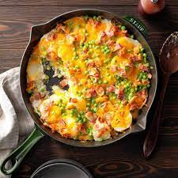

Potatoes are typically thought of as a humble and hearty food—the dish you make when you’re in need of a hug or when you’re tempering a hangry mood. But there are thousands of varieties of potatoes and much like the cook who’s looking for them, each are unique. But in the name of simplification, our knobby, tuberous friends can be broken down into three general categories: starchy, waxy, and all-purpose. The texture of the potato you pick is the most important factor when considering how to use it—the one that fries up crispy in the pan is different from the one that boils well for a potato salad. The answer behind these discrepancies? Science! Starchy potatoes bloat when boiled, as water seeps into their cells to create a crumbly consistency. This makes them ideal for baking or frying, where they’ll at once puff up and absorb flavor. In contrast, waxy potatoes repel excess water from entering their cells, so their texture holds up better when stewed, scalloped, or roasted. But of course, it doesn’t end there. Grab your spading fork and read on to learn about each major variety, how to select the best ones, and how to prepare them like a pro.
Red Bliss:
Red bliss potatoes live up to their name, imparting a tender texture and delicate flavor. They reside in the waxy category and are suitable for boiling and slicing in salads or casseroles. Red bliss potatoes sit pretty in this roasted and herbed pork loin and effortlessly wear the creamy coating in this potato salad with peas.
Preheat oven to 400 degrees F. Spray 2 9 x 13-inch pans with non-stick cooking spray.
Divide potatoes evenly between the 2 prepared pans and drizzle with olive oil. Toss to coat.
In a small bowl, mix parsley, onion and garlic powders, oregano, salt and pepper. Sprinkle over potatoes and toss to distribute evenly.
Roast, uncovered, at 400 degrees for 30 to 40 minutes or until potatoes are soft inside and crisp and golden brown outside.
Serve hot.
Ham and cheese frittata:
Ingredients:
2 cups ham (chopped)
2 cups potatoes (hashbrown, with peppers and onion, refrigerated or frozen)
6 eggs
2 cups bread (torn into 1-inch pieces)
1 cup cheddar cheese (cubed)
1/2 cup milk
1 tablespoon olive oil
1 1/2 teaspoons dry mustard
3/4 teaspoon crushed red pepper
1/4 teaspoon salt
Preperation:
In a large mixing bowl, whisk eggs, milk, dry mustard, red pepper flakes, and salt. Add bread pieces, stirring to combine; set aside.
Heat oven to 400 degrees F. In a large 10-inch ovenproof skillet, heat olive oil over medium high heat. Add potatoes and cook until golden and beginning to crisp. Add ham and cook, stirring often, for 2-3 minutes more. Push ham and potatoes to the side of the skillet; pour egg mixture into skillet, stir over heat and when the eggs begin to set up stir together, combining the ham, potatoes and eggs. Stir in cheese and place skillet in a 400 degree F oven for 10-15 minutes until cheese is melted and eggs are set.
Cut into wedges to serve.
Russet:
Russets are actually a family of potatoes which share the same russet-colored skin. Of the starchy variety, they make for a lovely base in mashed or baked potato recipes. The best russets will be both large and firm, while their skin will be thick and rough. As with all potatoes, avoid those that are green and ensure you eat those that have sprouted sooner, rather than later.
Popular Recepies:
Au Gratin Peas and Potatoes

Ingredients:
6 bacon strips, diced
1 medium onion, chopped
4 cups sliced peeled cooked potatoes
1/2 teaspoon salt
1 package (10 ounces) frozen peas, cooked and drained
2 cups shredded sharp cheddar cheese, divided
1/2 cup mayonnaise
1/2 cup 2% milk
Preperation:
In a large skillet, cook bacon until crisp. Remove with a slotted spoon to paper towels. Drain, reserving 1 tablespoon drippings. In the drippings, saute onion until tender.
Layer with potatoes, salt, peas, 1 cup cheese and bacon. Reduce heat; cover and simmer until heated through, about 10 minutes.
Combine mayonnaise and milk until smooth; pour over bacon. Sprinkle with the remaining cheese. Remove from the heat; let stand for 5 minutes before serving.
Loaded Breakfast Potatoes
Ingredients:
6 medium baking potatoes (about 3 pounds)
1 tablespoon butter
1 each small sweet red, orange and green pepper, finely chopped
1 cup finely chopped fresh mushrooms
1/4 cup finely chopped red onion
1/2 teaspoon salt
1/4 teaspoon pepper
6 large eggs, beaten
1-1/4 cups shredded cheddar cheese, divided
1/4 cup plus 6 tablespoons sour cream, divided
6 bacon strips, cooked and crumbled or 1/3 cup bacon bits
3 green onions, chopped
Preperation:
Preheat oven to 375°. Scrub and pierce potatoes with a fork; place on a microwave-safe plate. Microwave, uncovered, on high 15-18 minutes or until tender, turning once.
When cool enough to handle, cut a thin slice off the top of each potato; discard slice. Scoop out pulp, leaving 1/4-in.-thick shells.
In a large skillet, heat butter over medium heat. Add peppers, mushrooms and red onion; cook and stir 4-6 minutes or until tender. Stir in salt, pepper and 1 cup pulp (save remaining pulp for another use). Add eggs; cook and stir until eggs are thickened and no liquid egg remains. Stir in 1/2 cup cheese and 1/4 cup sour cream.
Spoon egg mixture into potato shells. Place on a 15x10x1-in. baking pan. Sprinkle with remaining 3/4 cup cheese. Bake 10-12 minutes or until heated through and cheese is melted. Top with remaining sour cream; sprinkle with bacon and green onions.